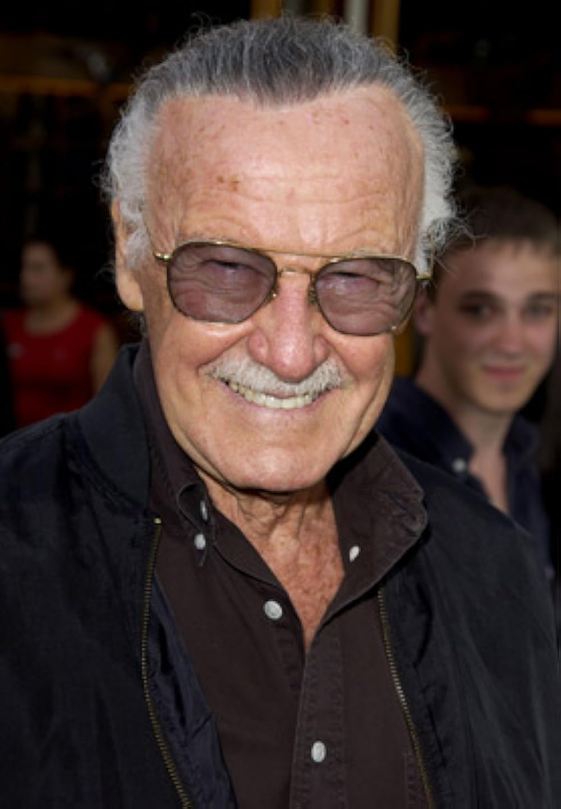

Quem foi Stan Lee
Stan Lee foi um escritor e editor de histórias em quadrinhos, também vice-presidente da Marvel Comics. Escreveu clássicos como Homem-Aranha, Hulk, Doutor Estranho e Quarteto Fantástico, obras que hoje são sucessos em filmes e séries. Nascido em Nova York, era filho de Celia e Jack Lieber.
Legado do Stan Lee
Ganhou popularidade mundial ao aparecer em diversos filmes da Marvel, com sua última participação em Vingadores: Ultimato (2019). Stan revolucionou a comunicação com os leitores e imortalizou o lema "Excelsior!", criando uma conexão única com os fãs.
5 Características de Stan Lee
- Humanização dos Heróis: Deu falhas humanas e dramas reais aos personagens.
- O "Método Marvel": Sistema de criação dinâmica entre roteirista e desenhista.
- Stan's Soapbox: Coluna editorial onde combatia o racismo e a intolerância.
- Bordões Icônicos: Mestre do marketing com expressões como "Excelsior!".
- Rei das Caméos: Transformou suas aparições em tesouros esperados pelos fãs.
3 Melhores Quadrinhos
- Homem-Aranha: Estreou em Amazing Fantasy #15.
- Quarteto Fantástico: Deu início à Era Moderna da Marvel em 1961.
- The X-Men: Introduziu a metáfora do preconceito em 1963.